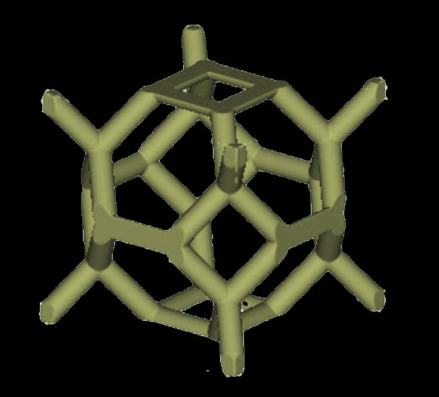

Additive Manufacturing & Investment Casting
Printing the mold, casting the metal — at the AMPrintCenter, RIT.
Pour molten aluminium into a 3D-printed ceramic mold, get a metal water nozzle. Easy in a sentence — every step in between has a way to ruin the part.

Step 1 — start with a part
I picked a water nozzle off the internet. Practical project to learn the full chain end-to-end.
Step 2 — design the negative
In Fusion 360 I built the negative mold around the part — pour holes at the top, drainage holes at the bottom, locating face on whatever side would print easiest. The most problematic geometry was a 90° overhang section, so I rotated the whole mold by 2°. The test prints of those problematic sections came out fine.

Step 3 — the lattice shell
If you print the mold solid, it warps when it gets fired. If you print it hollow with a bad lattice, it shrinks unevenly and the geometry walks off. The fix is a lattice that's structurally even but still printable. I generated the cell pattern in nTopology — Truncated Octahedron, because it's not too crowded and most of its struts go vertical.

Step 4 — supports, then printing
Generated supports for the shell, then printed the whole thing on a ceramic 3D printer. Print itself is still in progress.

Side quest — CFD: will the metal even fill it?
Before we cast, the question is whether liquid aluminium will actually run all the way down through this geometry without freezing or trapping air. So we ran a transient CFD simulation. Two phase materials: air and liquid aluminium. Mold ~5 cm OD. Inlet velocity 0.1 m/s. Surface tension 1.09 N/m. Temperature 1273 K — that's the melting point of aluminium, just hotter. Even though the geometry isn't perfectly symmetric, we cut the model in half and assumed symmetry — fine for an approximate answer, and an order of magnitude cheaper to run.